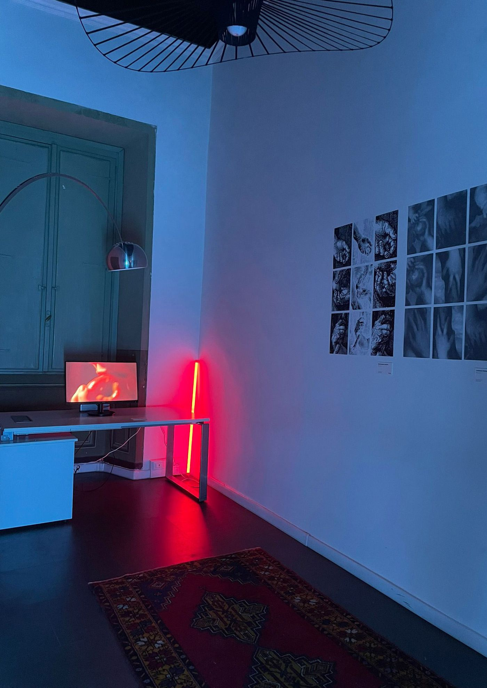
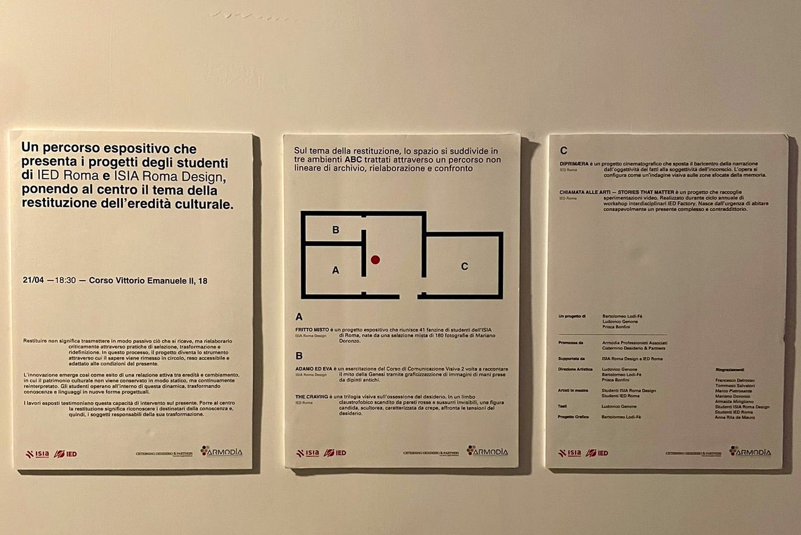
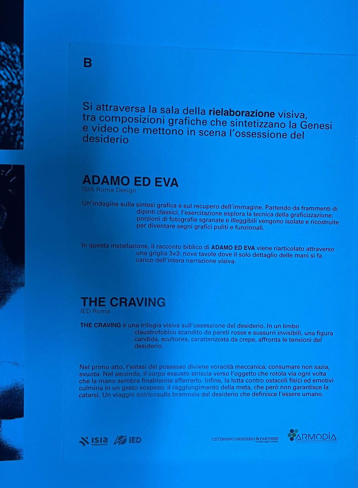
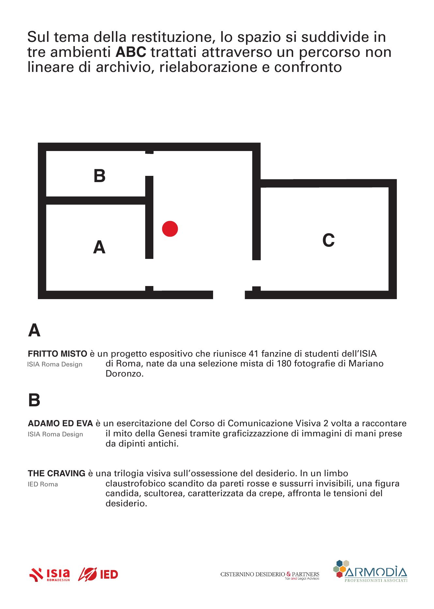
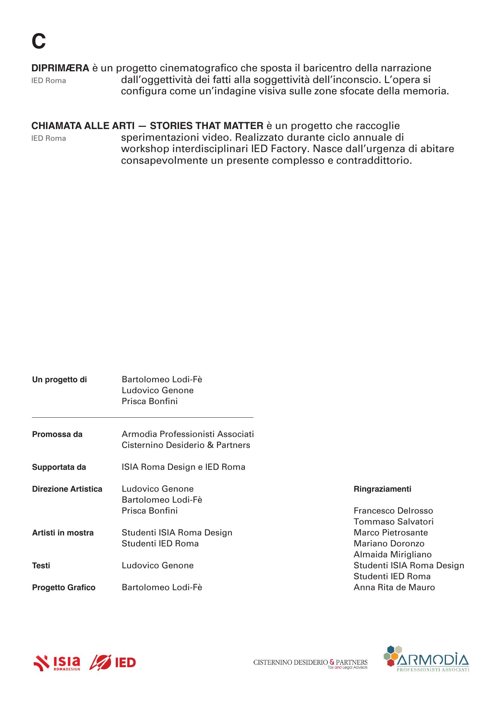

Exhibition route
21 April 2026, 6:30 pm
Corso Vittorio Emanuele II 18, Roma
Rome’s birthday and the Day of Innovation and Creativity
An exhibition route presenting projects by students of IED Roma and ISIA Roma Design, centred on giving back cultural heritage.
Giving back
Giving back does not mean passively handing on what we receive, but reworking it critically through selection, transformation and redefinition. Design becomes the tool through which knowledge is put back into circulation, made accessible and adapted to the conditions of the present.
Innovation emerges from an active relationship between heritage and change: cultural heritage is not preserved statically but constantly reinterpreted. The works on show bear witness to this ability to act on the present.
The exhibition turned a professional office, a workspace made for an entirely different purpose, into a route through three rooms. With Ludovico Genone and Prisca Bonfini I was responsible for the art direction; the graphic design, from the panels to the printed materials, is mine.
The floor plan
The space is divided into three rooms, a non-linear route of archive, reworking and encounter.
● Entrance. Click a room to go there.
Archive
You enter the archive room, where collective memory becomes the artist’s book. Independent visions rework a single body of shared photographs, giving everyday life new forms and many narrative possibilities.


Fritto Misto
ISIA Roma DesignAn exhibition project bringing together 41 fanzines by students of ISIA Rome, born from a mixed selection of 180 photographs by Mariano Doronzo. Starting from a shared archive, the project, conceived by Francesco Delrosso, produces 41 independent narratives sharing the same visual material but developed through separate editorial processes.
Reworking
You walk through the room of visual reworking, between graphic compositions that distil Genesis and videos that stage the obsession of desire.



Adam and Eve
ISIA Roma DesignA study of graphic synthesis and of recovering the image. Starting from fragments of classical paintings, the exercise explores graphic translation: grainy, unreadable portions of photographs are isolated and rebuilt into clean graphic signs. The biblical story is rearranged on a 3×3 grid: nine panels in which the hands alone carry the whole narrative.
The Craving
IED RomaA visual trilogy on the obsession of desire. In a claustrophobic limbo of red walls and invisible whispers, a pale, sculptural figure marked by cracks faces the tensions of desire: the ecstasy of possession that leaves you empty, the body chasing an object that slips away, the goal reached that brings no catharsis.
Encounter
You reach the room of encounter with reality, where an audiovisual dialogue between different screens stages the process of building an identity.

Chiamata alle arti, stories that matter
IED RomaThe 2026 edition of IED Factory, the yearly cycle of interdisciplinary workshops led by international artists. 200 young creatives, working with 9 artists from different fields, gave shape to visions and narratives about a complex present: identity, resistance, body, relationships and speed.
Diprimæra
IED RomaA short film that shifts the centre of the story from the objectivity of facts to the subjectivity of the unconscious: fragments of blurred zones and buried memories, to recover what is human in a hyper-rational world.
The graphic design
Six panels: two introduce the exhibition and the floor plan, one holds the credits, three accompany the rooms. Click to enlarge.





